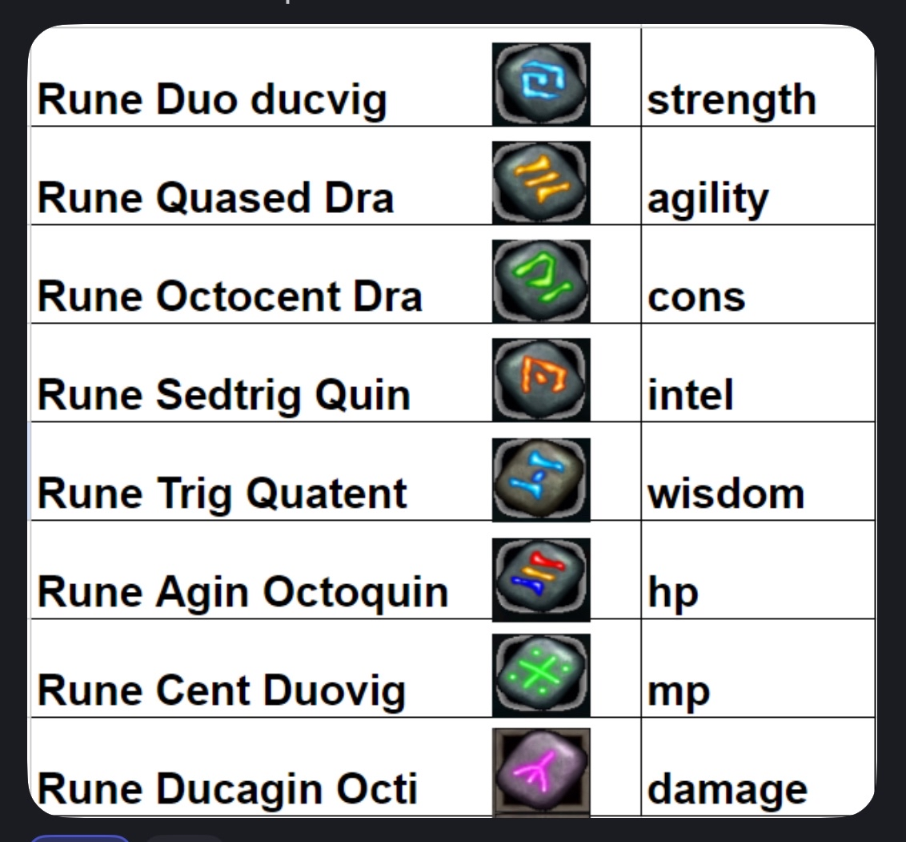

Yellow pots: Cheap to make alchemy pot of blue+rage pot. Provides 15 f/a lasts 5-10 min (?)
Blue Elixer: Found item to als provide 15 f/a, doesn't overlap with Yellow, so generally just use yellows instead. lasts 5-10 min (?)
White Elixer: Provides almus. provides 20 f/a. Stacks with Yellow/gp/o pot. lasts 5-10 min (?)
Glowing Potion Provides constant white + vbs + dmg reduction(?) basically for 700s. using whites/vbs on top of this has no effect
Omnihalibus Potion Provides like 3k hp for 10 min. Drops from drack/dax/mon/demos(?). Needed to tank various boses and handle weekly
Vis Bartious Scroll (vbs): Adds 20 ish atk/def, provides good melee defense. Good also for mages when getting hit, e.g. hks/daily. Not sold in stores, have to buy in castle when your guild has it.
Sanctus scroll: Provides almus, but it's not a guarantee. Maybe why the value is so low, otherwise you'd just use this mid-daily/weekly if you pop first almus?
Star: Generally don't use for endgame anything. Using star cancels white pots, gp's, etc. good for mages leveling.
Item use order can matter since some will add health but not heal up, and some shields will overwrite.
O pot -> gp -> ump -> vmp
yellow + white order doesn't matter.
Use all of the above for weekly.
Props
Hidden Props
High lvl items can have props via the name, but not listen on the item, prefix names are: Leech - steals hp mp Energized - +1mp per level, randomly fills mp bar to full Healthy - +1hp per level + 30% maxi chance Doom - reflects damage Chaotic - randomly strips buffs Animus - drains mana in pvp
Runes
